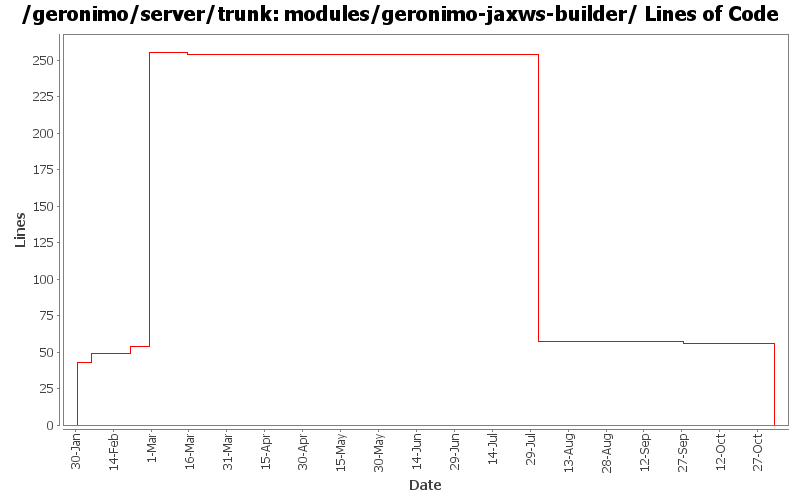

[root]/modules/geronimo-jaxws-builder
 src
(0 files, 0 lines)
src
(0 files, 0 lines)
 main
(0 files, 0 lines)
main
(0 files, 0 lines)
 java
(0 files, 0 lines)
java
(0 files, 0 lines)
 org
(0 files, 0 lines)
org
(0 files, 0 lines)
 apache
(0 files, 0 lines)
apache
(0 files, 0 lines)
 geronimo
(0 files, 0 lines)
geronimo
(0 files, 0 lines)
 jaxws
(0 files, 0 lines)
jaxws
(0 files, 0 lines)
 builder
(0 files, 0 lines)
builder
(0 files, 0 lines)

| Author | Changes | Lines of Code | Lines per Change |
|---|---|---|---|
| Totals | 13 (100.0%) | 308 (100.0%) | 23.6 |
| jdillon | 2 (15.4%) | 201 (65.3%) | 100.5 |
| dims | 4 (30.8%) | 97 (31.5%) | 24.2 |
| prasad | 4 (30.8%) | 4 (1.3%) | 1.0 |
| akulshreshtha | 1 (7.7%) | 4 (1.3%) | 4.0 |
| hogstrom | 1 (7.7%) | 1 (0.3%) | 1.0 |
| gawor | 1 (7.7%) | 1 (0.3%) | 1.0 |
GERONIMO-3565. Modules distributed amongst framework/modules and plugins
0 lines of code changed in 3 files:
making cxf intergration more modular: separated ejb bits from servlet bits.
1 lines of code changed in 1 file:
* updated copyright date to 2007
4 lines of code changed in 1 file:
Changed trunk to 2.1-SNAPSHOT
1 lines of code changed in 1 file:
More dependency pruning
4 lines of code changed in 1 file:
Add legal files
201 lines of code changed in 2 files:
GERONIMO-2849 - service-ref app client test
GERONIMO-2850 - CXF: initial web service support for EJBs
5 lines of code changed in 1 file:
Fix eol style
1 lines of code changed in 1 file:
Fix for GERONIMO-2796 - HandlerResolver for CXF web servies & other improvements
48 lines of code changed in 1 file:
Many Many Thanks to DJencks! - Got this working finally. All the tests in webservices-testsuite pass
43 lines of code changed in 1 file: